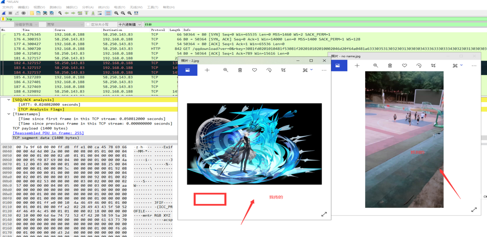

# QQ 流量分析
使用工具 ：Wireshark

# 略缩图不见了！！！
# 半张图
本来是是一张 1.6MB 的完整的图，流量截取后 出现错误

尝试了很多次发现只有大图片会发生不完整，推测是分成了两部分或多部分传输
# hxd 的图
意外抓到了别人的图，是因为 wifi 抓包的缘故（无线信号）

# 成功的尝试
输入判断条件：tcp and ip.dst==192.168.0.19
hex 搜索： ffd8
找到文件拖到本地还原
删除多余的报文 header，还原图片
总结
- 抓取文件格式只能是 jpg 格式，png gif pdf doc 文件均加密
- 大小号之间发图片都是加密的（用户和用户通信都加密）
- 大文件会分段传输，大小在 1MB 以下的话方便完整图片
- wifi 传输并不安全